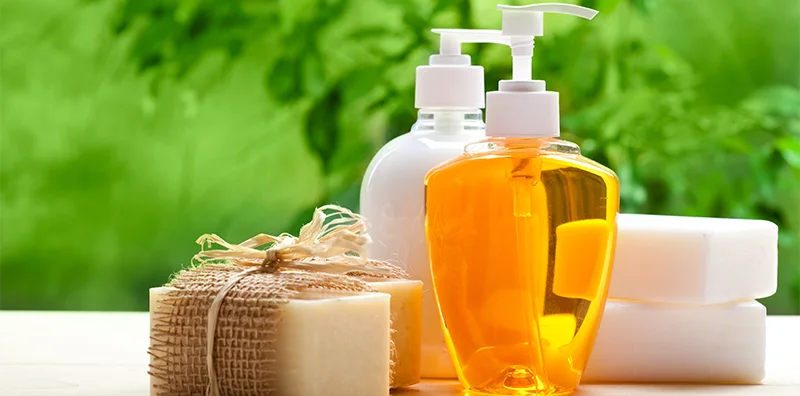
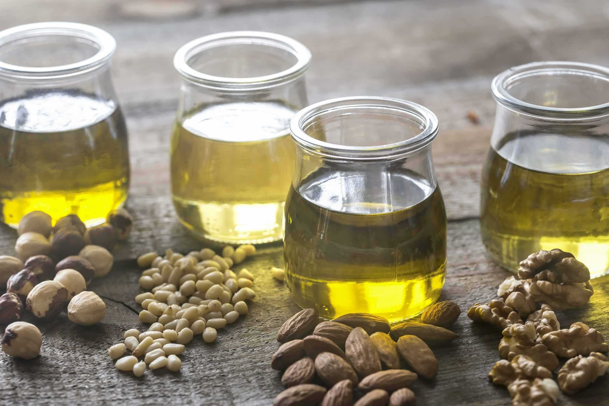
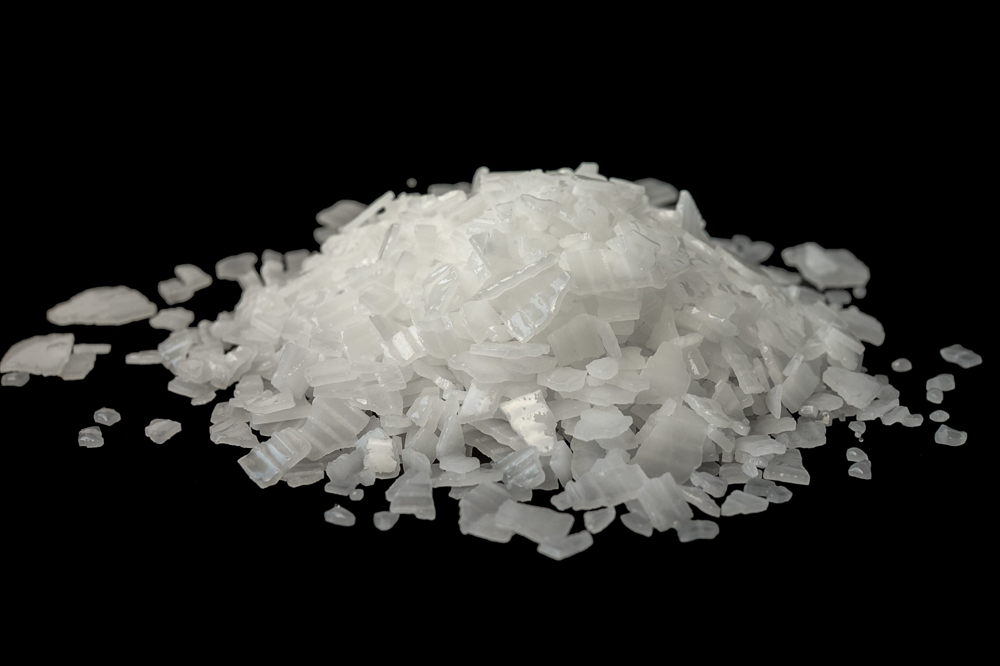
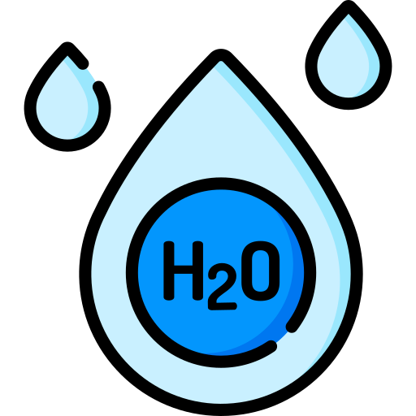

สบู่จากธรรมชาติ
สบู่จากธรรมชาติมีประโยชน์อย่างไร?
สบู่จากธรรมชาตจิมี กรรมวิธีการผลิตที่ใช้สารเคมีสังเคราะห์มาประกอบน้อยมาก ผู้ผลิตบางคนจะไม่ใช้สารเคมีสังเคราะห์เลย แต่จะมีส่วนประกอบของสารสกัดจากธรรมชาติแทน รวมทั้ง "กลีเซอรีน" ที่เกิดจากกระบวนการทำสบู่เองกลีเซอรีนที่อยู่ในสบู่ธรรมชาติจะเป็นตัวช่วยบำรุงผิวพรรณให้เกิดความชุ่ม ชื่น ซึ่งในสบู่ที่ผลิตโดยโรงงานอุตสาหกรรมจะมีขั้นตอนการสกัดกลีเซอรีนออกไป เพื่อขายเป็นครีมบำรุงผิวอีกต่อหนึ่ง ดังนั้น พอใช้สบู่พวกนี้จึงรู้สึกว่าผิวแห้งตึง ต้องทาครีมบำรุงผิวอีกครั้งหนึ่งเรียกว่าต้องเสียเงินสองต่อ

ภาพประกอบจาก th.theasianparent.com
ขั้นตอนในการทำสบู๋จากธรรมชาติ
1)ผสมน้ำ กับ โซดาไฟ เพื่อทำน้ำด่าง (ควรเทน้ำก่อนโซดาไฟทุกครั้ง เพื่อให้เกิดการเปลี่ยนเเปลงอุณภูมิ)พอน้ำด่างมีอุณหภูมิประมาณ 35-40 องศา ก็สามารถนำไปใช้ได้
2)หลังจากนั้นเลือกน้ำมันที่ชอบ เเล้ว เทน้ำด่างลงไปผสมกับน้ำมัน (ควรเทน้ำด่างลงน้ำมันทุกครั้ง)
3)ใช้เครื่องปั่นหรือใช้ตัวคน มาผสมให้ทั้งสองอย่างเข้ากันจนข้น
4)หลังจากนั้นสามารถนำกลิ่นลงไปผสมได้ (เเนะนำว่าควรใช้ น้ำมันหอมระเหยเเทนน้ำหอมเพราะน้ำมันหอมระเหยนั้นไม่มีส่วนผสมของเคมีปนอยู่ด้วย)
5)พอเสร็จเเล้วน้ำสบู่ที่ข้นใส่ลงเเม่พิมพ์(ควรใช้บล๊อกไม้ หรือ ซิลิโคนเป็นเเม่ำิมพ์)เเล้วรอการบ่ม (ทำให้ตัวด่างหายไป)ให้ครบ 1 เดือนก็สามารถน้ำไปใช้ได้ครับ



